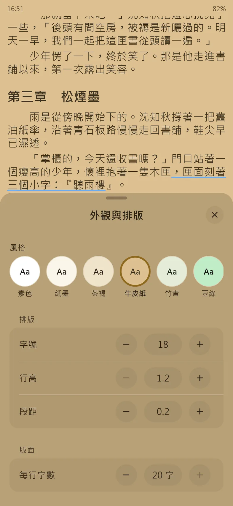
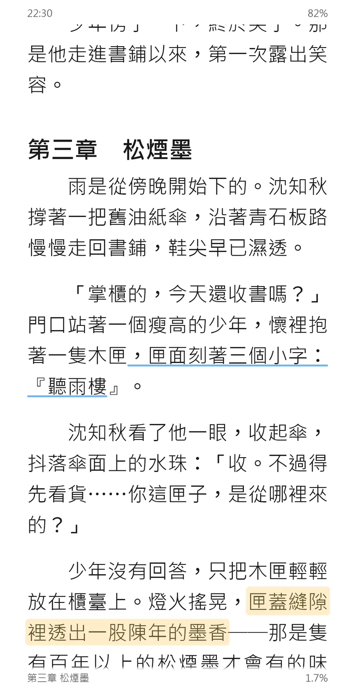
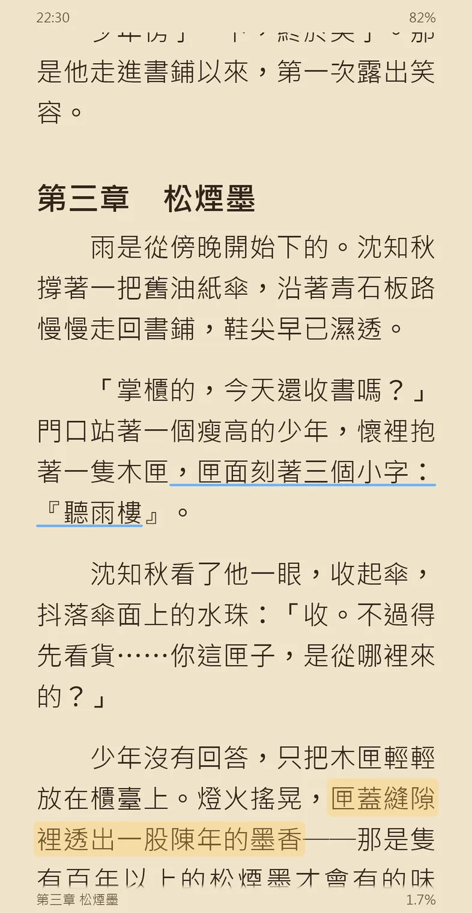
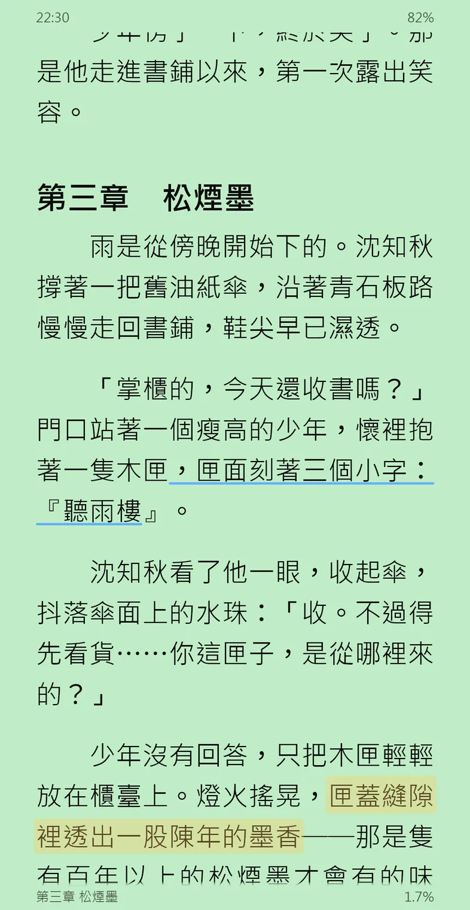
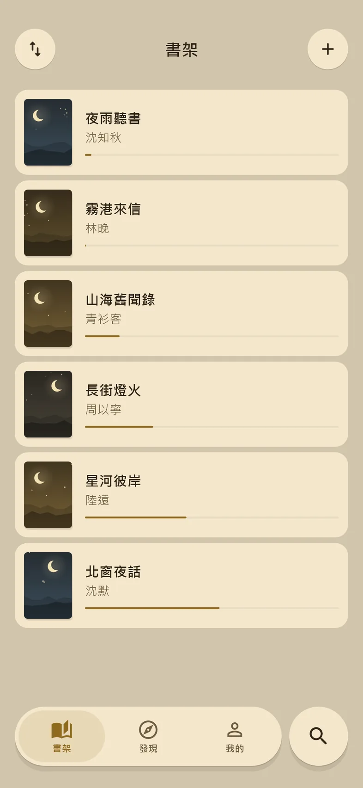
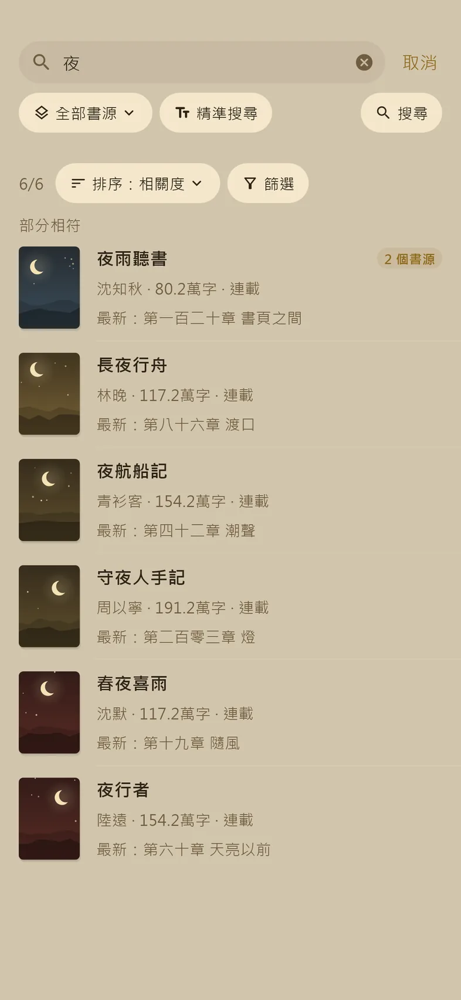
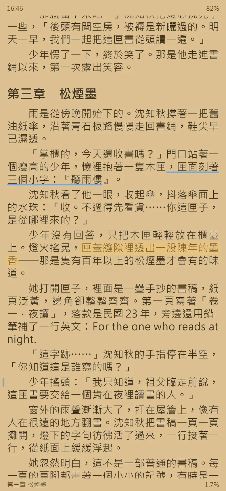

還有
點一個看看。
夜讀不附書源。安裝後到「我的 → 書源管理」匯入你自己的，格式相容 Legado（閱讀）。










標點不落行首行尾，「……」不拆行。
六種風格，深色可用純黑。
書架上的網路書自動整本下載，沒網路照樣讀。
繁簡一起找，同一本書合成一筆。
書籤、底色、備忘，可以匯出成 Markdown。
點一個看看。
夜讀不附書源。安裝後到「我的 → 書源管理」匯入你自己的，格式相容 Legado（閱讀）。
Android 7.0 以上的 arm64 手機，App 會自己檢查新版。同一版本另附未簽章的 iOS 安裝檔，要自行簽章安裝。